Put the first counter on your creatures before trying to multiply it. Atraxa cannot put a +1/+1 counter on a creature that has none. Develop a counter source and a draw engine, then use proliferation to turn that established board into mana, cards, and lethal combat. This is a creature-counter deck with finite interactions, not a poison or planeswalker deck.
Build a board worth proliferating
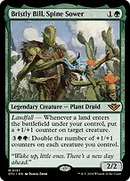
Bristly Bill, Spine Sower

Seeds a creature on each landfall and later doubles your whole team's +1/+1 counters for five mana. On a fetchland turn, resolve its first counter trigger before resolving Evolution Sage's first proliferate trigger.
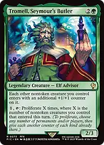
Tromell, Seymour's Butler
Every other nontoken creature enters with a counter, enabling immediate benefits from your counter payoffs. His tap ability counts nontoken creatures that entered this turn even if they are no longer on the battlefield; persist returns count. He needs haste or a turn under your control before tapping.
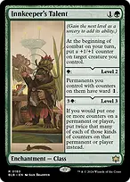
Innkeeper's TalentThe base ability seeds one creature each combat. Level two protects permanents with counters through ward; level three doubles counters you place, including charge counters. Level three also doubles the -1/-1 counter from your persist, so read the Archmage section before upgrading.
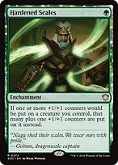
Hardened ScalesTurns each one-counter addition to a creature into two. It modifies each separate proliferate event, but does not create a first counter on a creature you did not choose or could not proliferate.
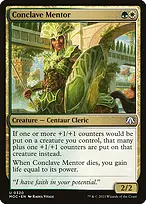
Conclave Mentor
A second extra-counter effect on a creature, useful with your creature tutors and entry triggers. It affects only +1/+1 counters, so it does not worsen persist's -1/-1 counter.
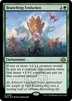
Branching EvolutionDoubles +1/+1 counters on your creatures. When this and Hardened Scales apply, apply Scales before doubling to maximize the result: one counter becomes four.
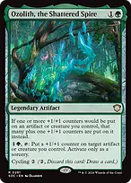
Ozolith, the Shattered SpireAdds an extra +1/+1 counter and can seed a creature itself. Unlike The Ozolith, this does not save counters when creatures leave. Its activated seeding ability is sorcery speed.
Make each proliferate do several jobs
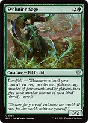
Evolution SageYour ten fetchlands each provide two land entries, yielding two proliferations. With Tekuthal, that becomes four proliferations. Save a fetch activation for an opponent's turn when Danny Pink or another once-per-turn draw engine can pay you again.
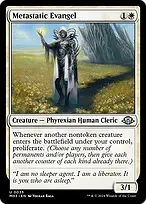
Metastatic EvangelEach other nontoken creature entering proliferates, including creatures returned by persist or found with Chord of Calling. This rewards the deck's creature density at two mana. It does not seed a creature by itself.
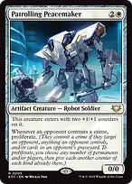
Patrolling PeacemakerStarts with its own counters and proliferates whenever an opponent commits a crime, even against a different opponent. A spell or ability targeting an opponent of its controller, that player's permanent, or a card in that player's graveyard qualifies; an untargeted board wipe does not.
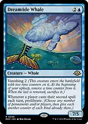
Dreamtide Whale
A three-mana 7/5 that proliferates when any player casts their second spell in a turn. Keep its time counters supplied through Atraxa and other proliferation so vanishing does not sacrifice it. Its seven power also discounts The Great Henge to two green mana.
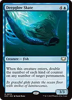
Deepglow Skate
Doubles existing counters on any number of target permanents, including Astral Cornucopia and The Ozolith. It cannot seed an empty permanent. Counter doublers can increase the counters it adds further; Tekuthal does not affect this ability because doubling is not proliferating.
Convert counters into mana and cards

Birds of ParadiseTurn-one fixing for all four colors. Later it becomes a flying attacker and draw-engine participant once it has counters. Noble Hierarch supplies early green, white, or blue; neither makes you immune to a creature wipe.

Delighted HalflingProduces colored mana for legendary spells such as Atraxa, Tekuthal, or The Great Henge and makes those spells uncounterable when that mana is spent. Its ordinary ability supplies colorless mana for other spells.
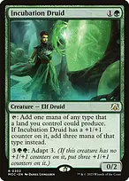
Incubation DruidOne +1/+1 counter upgrades this from one mana to three of one type a land you control could produce. Use a cheap seeding effect rather than spending five mana to adapt whenever possible.
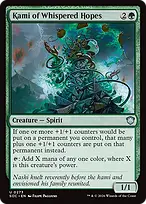
Kami of Whispered HopesBoth increases +1/+1 counter additions and taps for mana equal to its power. Grow it before activating it, then use that mana for Bristly Bill, Shalai, or a large Walking Ballista.
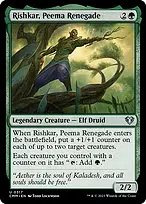
Rishkar, Peema RenegadeSeeds up to two creatures and turns your creatures with counters into green mana sources. Summoning sickness still applies. Tap creatures that cannot profitably attack, keeping your threatening attackers available.

Esper SentinelCounter growth raises the tax on an opponent's first noncreature spell each turn. It combines early card pressure with the same creature-growing plan used to win.
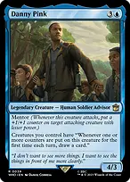
Danny Pink
Gives each creature a draw trigger for the first counter-placement event on that creature each turn. Proliferating five already-seeded creatures can draw five cards; proliferating them again that turn does not draw another five. Off-turn fetchlands reset the opportunity.
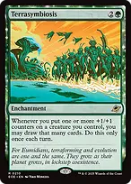
TerrasymbiosisDraws cards equal to one batch of +1/+1 counters put on one creature, only once each turn. Save its optional draw for a large Bristly Bill, Deepglow Skate, or Ouroboroid event rather than automatically taking the first small trigger.
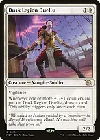
Dusk Legion DuelistA cheap repeatable draw source that needs a +1/+1 counter placement to trigger and works once each turn. It rewards off-turn Evolution Sage triggers, but cannot draw repeatedly during the same turn.
Protect your engine and reset Archmage
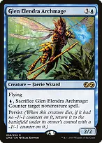
Glen Elendra ArchmagePay blue and sacrifice it to counter a noncreature spell. Persist returns it with a -1/-1 counter if it died without one. Tromell makes it return with a +1/+1 counter too; the opposing counters cancel, resetting persist. Each counterspell still costs blue and requires a legal spell target, so this is finite protection rather than a table lock.
With a level-three Innkeeper's Talent, persist gives Archmage TWO -1/-1 counters. Without an as-enters counter source, the 2/2 returns as a 0/0 and dies before you can save it with an activation or a Henge trigger. Tromell's entering +1/+1 counter is also doubled to two and cancels both; Master Biomancer also works when his power is sufficient. Do not upgrade Talent carelessly.
Never proliferate an Archmage that only has a -1/-1 counter: that makes the problem worse. Without an entering counter source, add a +1/+1 counter using Bristly Bill, Shalai, Brokers Ascendancy, or another seeding effect before sacrificing it again.
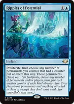
Ripples of PotentialProliferates and can phase out your permanents that received counters this way, protecting an established board from exile and destruction. Permanents without counters cannot be saved this way; phase out crucial support pieces too when they are eligible.
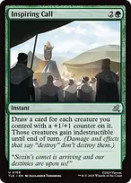
Inspiring CallDraws for your creatures with +1/+1 counters and gives those creatures indestructible. It can refill your hand while answering a destroy-based wipe, but leaves your counterless creatures and noncreature support exposed.

Swan SongCheap protection against a key instant, sorcery, or enchantment. An Offer You Can't Refuse covers other noncreature spells but gives the opponent two Treasures; keep either available on a turn when you commit an important engine.
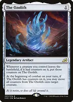
The OzolithPreserves counters from your creatures leaving the battlefield and can concentrate them on a fresh attacker at the beginning of combat. It does not return creatures or immediately put counters on replacements after a wipe. It collects negative counters too, so decline a harmful transfer when necessary.
Answer threats and turn the board into a win
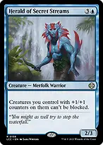
Herald of Secret StreamsMakes your creatures with +1/+1 counters unblockable. It can enable the older creatures to attack immediately on the turn you cast it, even though Herald itself has summoning sickness.
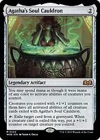
Agatha's Soul CauldronRepeatable graveyard hate that seeds a creature when it exiles a creature card. Exiling your dead Walking Ballista gives its activated damage ability to every creature you control with a +1/+1 counter. Exiling a dead mana creature can turn the team into mana sources; only activated abilities are shared, not persist or replacement effects.
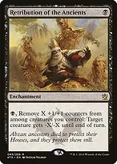
Retribution of the Ancients
For one black mana and spent +1/+1 counters, gives a creature -X/-X. Use excess counters to kill an indestructible creature through toughness reduction or clear a key blocker without consuming a card each time.
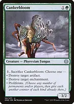
CankerbloomA cheap creature that can answer an artifact or enchantment for one more mana. Choose proliferation only when it meaningfully advances the board or secures a kill; sacrificing it also feeds The Ozolith if it had counters.

Swords to PlowsharesEfficient creature exile. Assassin's Trophy handles a broad range of permanents at the cost of a basic land for the opponent; Anguished Unmaking exiles a nonland permanent when graveyard recursion or indestructibility matters.
The primary win is a large, evasive army. Atraxa's flying and growing power also make 21 combat damage to a player a realistic secondary route. Count each player's blockers and commander damage separately; damage from Walking Ballista or abilities borrowed through Agatha's Soul Cauldron is not commander combat damage.
Tutor for the missing job
Do not automatically tutor Tekuthal. Doubling proliferation is poor when there are no useful counters to increase. Similarly, Walking Ballista normally enters with zero counters if found directly with Chord of Calling and dies unless an entering-counter replacement such as Tromell or Master Biomancer supplies counters. Cast Ballista with mana in ordinary circumstances.
Opening hands and sequencing
Keep three lands with early green access, an accelerator, and either a counter-seeding effect or a draw engine. A two-land hand needs reliable cheap ramp and a realistic route to additional lands. Mulligan a hand full of multipliers with no way to put down the first counter, or expensive payoffs without development.
A strong sequence is turn-one fixing, turn-two ramp or a cheap counter source, then a draw engine or Atraxa once proliferation does useful work. The best order depends on your colors and the table; casting Atraxa into removal with no developed counters is rarely the strongest use of four mana.
Ten fetchlands find typed duals across all four colors. Favor early green and enough blue to keep Archmage or a counterspell available. Spara's Headquarters and Zagoth Triome enter tapped; fetch them when you can afford the tempo. Forest and Island provide a small basic fallback, while Gavony Township is the only land that makes only colorless mana.
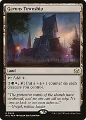
Gavony TownshipA land-slot way to seed or grow the entire army at instant speed. Holding its activation for an opponent's turn can trigger Danny Pink and your other once-per-turn draw engines again, but the land must tap in addition to paying four mana.
Leave protection mana before spending everything on Bristly Bill or a large Ballista. If opponents force a wipe, prioritize saving a draw engine and a rebuilding path rather than preserving every small creature.
When several counter effects apply, work through one event at a time. Order your own simultaneous triggers deliberately, choose which permanents to proliferate, and explain Archmage's returning counters before repeating its activation. This deck can generate substantial value without Atraxa, so rebuild the engine instead of repeatedly paying commander tax into open removal.